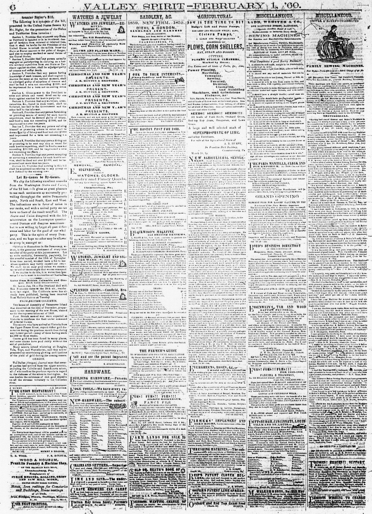
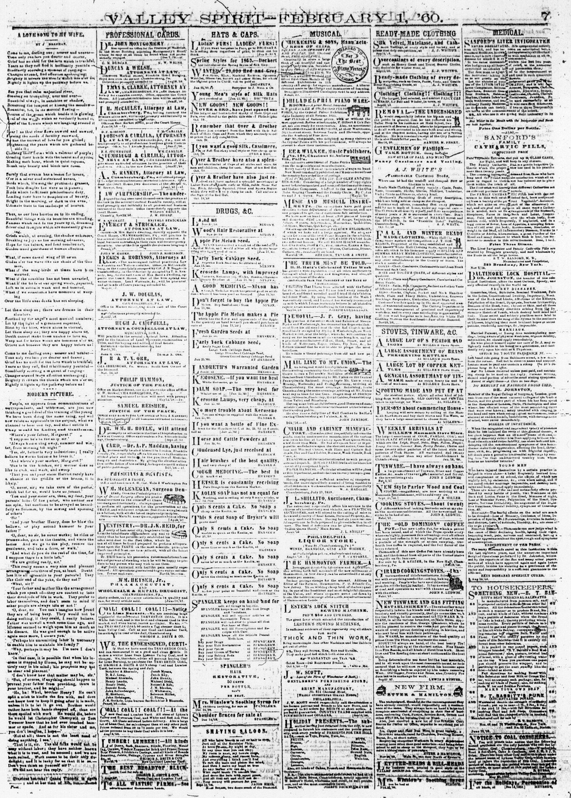
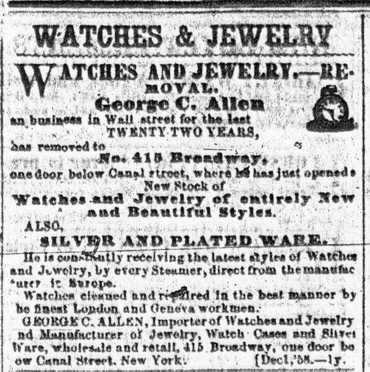
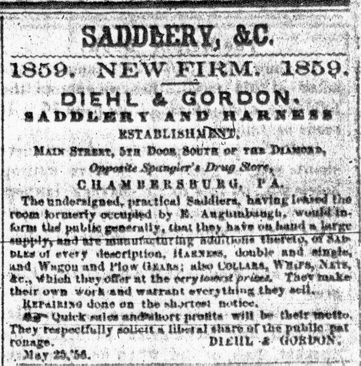

|  |  |
Page 6 was almost always filled with advertising, though news might fill column 1. As
throughout the Valley Spirit, ads were placed by category rather than place of
origin, though columns of miscellaneous ads did appear. On February 1, while columns
5-6 were "miscellaneous" ads--for sewing machine companies in New York and
Baltimore, a steamboat service headquartered in Pittsburgh, a furrier in Philadelphia,
and others--ads also appeared in columns 2-4 under the categories "Saddlery,
&c.," "Hardware," "Watches and Jewelry," and "Agricultural."
|  |

|
Page 7 followed the same format as page 6. On February 1, page 7 carried ads under a number of headings, including "Professional Cards" (these were small inserts, mostly for local lawyers and doctors), "Hats & Caps," "Drugs, &c.," "Musical," "Ready-Made Clothing," "Stoves, Tinware, &c.," and "Medical."
Proceed to page 8